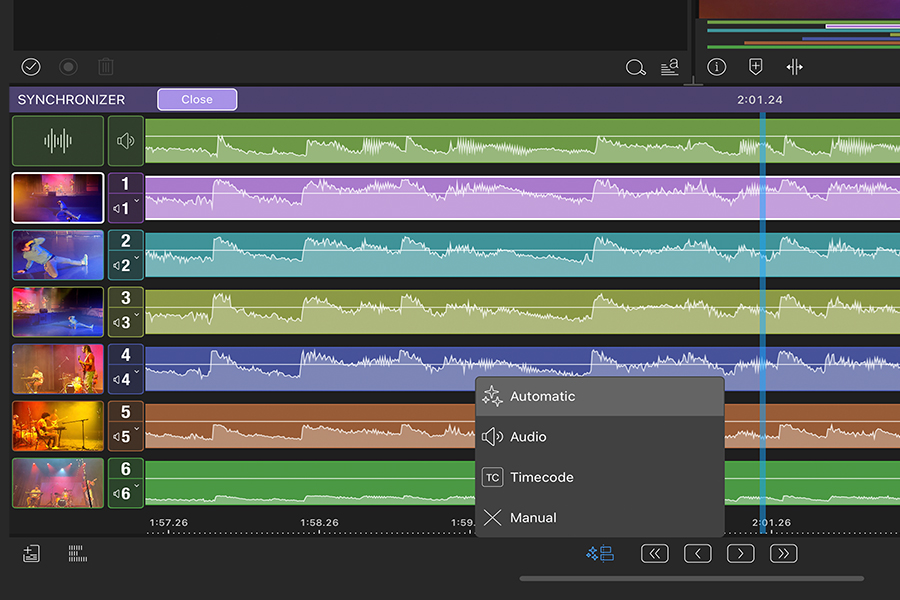
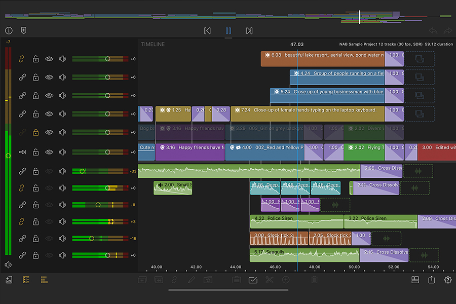

我每周剪三期软件演示视频：从双机位录制到桌面端收尾的一套移动优先工作流
以一个固定产出节奏的创作者视角，讲清 LumaFusion 如何嵌进从双机位采集到 FCP 桌面端接力收尾的完整链路——每一步的衔接点、容易断链的地方、以及这套流程什么时候不划算。
我每周要出三期软件使用演示视频，每期 5~8 分钟。画面是主屏录屏 + 副屏人脸特写双机位，配上讲解音频和简单的转场、路径动画。以前这套流程要绕两次桌面端，现在把 LumaFusion 插进去之后，从采集到半成型的工程全都在 iPad 上搞定，最后导出 FCPXML 交给 Mac 做调色和混音收尾。这篇文章讲的是我怎么拼这条链。
旧流程：三次文件传输，两次手动同步
在改用 LumaFusion 之前，我的流程是这样的：
- 两台 iPhone 分别录主屏和人脸 → AirDrop 到 Mac
- 打开 Final Cut Pro，手动把两段素材对齐时间码（录屏和摄像头的时间戳差几秒，每次都要拉波形对齐）
- 剪完之后导出 MP4 → 再传到 iPad 上预览效果 → 有问题再回 FCP 改
- 最终版本导出 → 上传分发
痛点不在剪辑本身，而在文件搬运和多机位对齐这两步。双机位每次要手动拉波形找对齐点，熟练了也要 5 分钟，偶尔录屏的时间戳跳了一下还要重找。而且中间要来回传两趟文件——Mac 到 iPad 预览，iPad 回 Mac 改——对一个周更任务来说，这些碎片时间加起来每周能吃掉半小时。
我试过在 iPad 上用 Lumafusion 从头剪到尾直接出片——是从LumaFusion下载拿的基础版装上试的——但复杂一点的调色和最终混音还是桌面端的工具链顺手。真正的解法不是"全都在 iPad 上做"或"全都在 Mac 上做"，而是找一个移动端负责采集+粗剪，桌面端负责精修+收尾的衔接点——LumaFusion 的官网上一直强调它的定位就是移动优先但不割裂桌面，这条链算是对它产品理念的一个实践。
新流程：双机位采集 → LumaFusion 多机位同步 → FCPXML 接力 → FCP 收尾
现在这条链分四步，每一步的输出直接喂给下一步，中间不需要手动搬文件或重新做对齐：
第一步：双机位同步采集
两台 iPhone 同时启动录屏和摄像头录制。我用 Voice Memos 或 iPhone 自带的语音备忘录在两台设备上打一个同步标记——说"开机"同时拍一下手，波形里会有一个尖峰。后面在 LumaFusion 的多机位工作室里，这个尖峰就是自动对齐的锚点。
第二步：LumaFusion 里多机位粗剪
录完直接 AirDrop 到 iPad，打开 LumaFusion：
- 多机位工作室自动检测拍手的波形峰值，两段素材一键对齐——这个功能只有 iOS 版有，安卓用户得手动对齐时间码或靠波形手动拉；
- 粗剪阶段我只做三件事：切掉空拍、加叠化转场（0.5 秒左右）、在需要引导观众注意力的地方给屏幕录制的画面加一个贝塞尔路径动画——比如鼠标沿曲线移动到某个按钮上高亮一下；
- 配音是在剪完时间线之后直接在 iPad 上录的，LumaFusion 会自动把配音挂到音频轨上，磁性时间线会自动给画面让位置；
贝塞尔路径那块值得单独说一下（后面实操细节还会展开，我是翻了LumaFusion文档才把贝塞尔路径调明白的）。基础关键帧只能做匀速直线，增强关键帧包能把直线路径掰成弧线，还能调缓入缓出——鼠标移动模拟真人点按钮的动作时，弧线比直线自然太多了，观众不会觉得"这是动画做的"。
第三步：FCPXML 导出接力
粗剪完的工程在 LumaFusion 里导出 FCPXML 格式——这个功能也是 iOS 版独占，安卓用户目前只能导出视频文件没法接力桌面端。XML 文件通过 AirDrop 传到 Mac，双击直接在 Final Cut Pro 里打开，时间线、多机位分组、关键帧位置全部原封不动。
第四步：FCP 里调色和混音
桌面端的 FCP 做两件 LumaFusion 不擅长的事：用 Color Grading 工具给画面统一校色，以及用 Logic 联动做最终的音频混音和母带处理。这步做完就是成片了。

实操细节：两处最容易断链的环节
这条链我跑了一个多月，最容易卡住的地方有两个：贝塞尔路径动画越调越乱和转场时长对不上预期。踩过几次坑之后摸索出了对应的处理方式。
贝塞尔路径：先想轨迹再动手
第一次用增强关键帧的时候，我是先打关键帧再调路径，结果拖手柄把直线掰成弧线的时候，相邻的关键帧也跟着飘，越调越乱。后来养成一个习惯：
- 先在脑子里想清楚运动轨迹——鼠标从屏幕左下角的"开始"按钮出发，沿一个向上弯的弧线移动到右上角的菜单，还是简单的直线？
- 打好所有位置关键帧（每个转折点一个），然后打开路径视图，先把所有关键帧的路径模式切成贝塞尔，一个一个切完再去拖手柄；
- 手柄拖动时只动当前关键帧的手柄，别同时动相邻关键帧的——LumaFusion 的路径编辑会让相邻手柄联动，按住 iPad Pro 的 Apple Pencil 可以临时禁用联动，精确调单个手柄。
缓动曲线我统一用缓入缓出，默认线性最假。在关键帧属性里分别给进入和离开设 Ease In 和 Ease Out，各 0.2 秒就够——太快显得突兀，太慢拖节奏。
转场：先看接缝两侧有没有余量
转场加不上或者时长被压成 0.1 秒，八成是接缝两侧的素材到头了——LumaFusion 需要两侧各有足够的画面余量（叫"手柄"）才能对称展开转场。我以前加转场出问题就删了重加，现在会先把接缝两侧的片段稍微往回拉一点，留出至少 1 秒的画面余量，转场就能正常展开。
克制使用的原则也是后来才想明白的。一开始每期视频我都换好几种转场——翻页、故障风、三维旋转，后来发现叠化和直切就能覆盖 90% 场景。花哨转场用在内容有明确情绪动机的地方才有意义（比如讲完一个章节用黑场过渡到下一章），每个镜头都换转场是新手痕迹，反而分散观众注意力。
这套流程省了多少事，以及什么时候不划算
跑了一个月的实际效果：
- 多了两次手动对齐消失了，多机位同步一键搞定，每周省出 5~8 分钟；
- 贝塞尔路径在 iPad 上所见即所得，比在 FCP 里输贝塞尔曲线数值直观太多，每个引导动画的调整时间从 10 分钟降到 3 分钟；
- 中间文件传输省了两趟——录完直接在 iPad 上剪，导出 XML 直接在 FCP 开，不用再 AirDrop 回 Mac 再传 iPad 预览；
但这套流程有清晰的边界，不是什么场景都适用：
- 安卓用户暂时跑不通完整链路——多机位工作室和 FCPXML 导出都是 iOS 独占，安卓版只能用 6+6 轨做单机位剪辑，导出只能出视频文件没法接力桌面端。我的建议是安卓用户直接在 LumaFusion 里一次出片，别勉强套这条移动优先 + 桌面收尾的两段式；
- 增强关键帧是付费功能——基础版关键帧够用，但贝塞尔路径和缓动要单买或订阅 Creator Pass。我建议先拿基础版剪两条片，明确"我的引导动画确实需要弧线而不是直线"再决定要不要买。只需要变速效果（慢动作）的话，单买速度渐变包就行；
- 6+6 轨 vs 12+12 轨——如果你的工程要叠多层合成、画中画同时开三个、再加 10 条音频轨混音，iOS 版的 12+12 轨余量明显更大。安卓版 6+6 轨应付单机位 Vlog 完全够，但复杂项目会卡住；
- 两周以上停更要谨慎——订阅 Creator Pass 没有长期合约约束，短期大项目（比如一个月集中剪 4 期活动视频）可以订阅一个月用完就取消。但如果停更两周以上再回来，LumaFusion 不会自动帮你找回状态，FCPXML 导出的工程如果中间改过命名或素材路径有变动，FCP 里打开可能会丢素材引用。
关于付费决策多说一句。我最初纠结了好一阵是单买速度渐变包还是直接订阅 Creator Pass，算下来一个月的视频产出频率刚好覆盖订阅成本——加上 Storyblocks 的素材库（百万级免版税背景音乐和空镜），省下来找免费素材的时间比订阅费值钱。但如果你像我早期那样素材全自己拍、只用单机位剪辑，单买速度渐变包就够了，没必要为用不上的功能花钱。
如果你也有一个固定节奏的视频产出任务（每周一到两期），手头有 iPhone 或 iPad，可以照着拼一下这条链：双机位同步采集 → LumaFusion 多机位粗剪 → 贝塞尔路径做引导动画 → FCPXML 导出 → FCP 调色收尾。不是要你完全照搬每一步，而是看哪些环节能省掉手动搬运，哪些衔接点能自动对齐——这条链的核心不是某个软件，而是减少文件来回传和减少手动对齐这两个具体痛点。

最后提一下，我整理的 LumaFusion 中文资料和购买决策参考散落在三个仓库里——主仓库在GitHub，国内访问不方便的话直接走Gitee或GitCode的镜像，内容同步维护的。